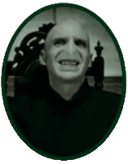

Desafio 1

Tom Marvolo Riddle (Voldemort) foi o mais poderosos Bruxo das Trevas na história do Mundo Mágico. Filho de mãe bruxa e pai trouxa foi criado em um orfanato em que foi deixado:
A-Pelo pai
B-Pela mãe
C-Pelo pai e pela mãe
Responder